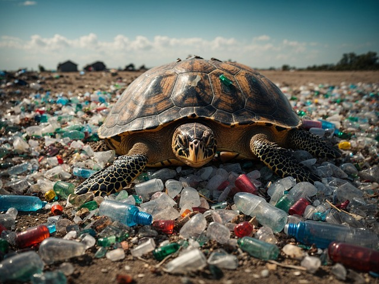

Plastic Pollution’s Impact on Marine Life and Our Role in Conservation
Our oceans, teeming with life, are under siege by a silent threat – plastic pollution. Millions of tons of plastic waste enter the marine environment every year, wreaking havoc on marine ecosystems and the creatures that call them home. Understanding the impact of plastic pollution is crucial, and so is recognizing our role in mitigating this growing crisis.

Impact of Plastic Pollution on Marine Life
Plastic debris takes a brutal toll on marine animals. Seabirds, whales, seals, turtles, and fish mistake plastic bags, bottles, and microplastics(fragments smaller than 5 millimeters) for food, leading to ingestion and starvation. These ingested plastics can cause internal blockages, impede digestion, and create a false sense of fullness, ultimately leading to death. Entanglement in plastic debris is another major threat. Animals can become trapped in discarded fishing gear, six-pack rings, and other plastic items, hindering their movement, causing severe injuries, and leading to suffocation or drowning. The consequences of plastic pollution extend beyond individual animals. Plastic debris can damage vital marine habitats like coral reefs. Microplastics can also absorb and concentrate harmful toxins in the ocean, entering the food chain and bioaccumulating in predators like fish and shellfish. This contamination poses a risk to human health as well, as we consume these seafood sources.Human Activities Contributing to Plastic Pollution
The ubiquity of single-use plastics and our throwaway culture are the primary drivers of plastic pollution in the oceans. Plastic packaging, shopping bags, disposable utensils, and beverage bottles are major culprits. Improper waste management allows plastic waste to leak from landfills and enter waterways. The growing use of synthetic textiles, which shed microplastics during washing, further exacerbates the problem. Legislation and policy measures: Legislation and policy measures are essential tools in combatting the pervasive issue of plastic pollution. Governments worldwide are increasingly implementing bans on single-use plastics, a crucial step in reducing plastic waste generation. By prohibiting items like plastic bags and disposable cutlery, these bans encourage the adoption of more sustainable alternatives and curb the environmental harm caused by plastic litter. Additionally, governments can introduce extended producer responsibility (EPR) schemes, which hold manufacturers accountable for the entire lifecycle of their products. Under EPR schemes, producers are incentivized to design eco-friendly products and assume responsibility for proper disposal and recycling. These measures not only promote resource conservation but also stimulate the development of a circular economy, where materials are reused and recycled to minimize waste.Challenges for Businesses
Measurement and Verification One of the key challenges businesses face in implementing carbon offsetting initiatives is measuring and verifying their emissions and offsets. Calculating a company’s carbon footprint requires comprehensive data collection and analysis across various operational activities, which can be complex and resource-intensive. Furthermore, ensuring the legitimacy and effectiveness of carbon offset projects necessitates rigorous verification processes to avoid greenwashing or unintended consequences. Public awareness and education campaigns Public awareness and education campaigns are instrumental in raising consciousness about the detrimental effects of plastic pollution and fostering responsible consumption habits. By informing the public about the environmental consequences of plastic waste, these campaigns empower individuals to make informed choices and take action to reduce their ecological footprint. Emphasizing the importance of sustainable alternatives, such as reusable bags and water bottles, campaigns encourage the adoption of eco-friendly practices in daily life. Through widespread dissemination of information and engaging messaging, these initiatives inspire collective action and promote a culture of environmental stewardship. By amplifying awareness and encouraging behavior change, public awareness campaigns play a vital role in addressing the pervasive issue of plastic pollution and fostering a more sustainable future. Creative solutions for waste reduction Consumers can play a vital role by reusing and repurposing items whenever possible. For instance, if you’re wondering what to do with your VHS collections, consider donating them to educational institutions or collectors. Before donating you can digitize VHS tapes to preserve the content in a more space-saving and environmentally friendly format. This approach extends the lifespan of the material and reduces the need for virgin plastic production. If you find yourself with excess clothing, consider donating it to local charities or clothing banks. Before donating, you might also explore the option of upcycling or repurposing items into new garments or accessories. This approach not only extends the lifespan of the material but also reduces the demand for new clothing production, thereby minimizing waste and promoting sustainability.
Innovation in plastic alternatives and clean-up technologies Research and development efforts are actively underway to engineer biodegradable and compostable alternatives to traditional plastics. These innovative materials offer promising solutions to the persistent problem of plastic waste accumulation, as they break down naturally over time without leaving harmful residues in the environment. By investing in the development and implementation of such alternatives, societies can significantly reduce their reliance on conventional plastics and mitigate their adverse environmental impact. Moreover, investments in technologies to clean up existing plastic pollution from the oceans are essential for addressing the vast quantities of plastic debris already present in marine ecosystems. Advanced clean-up technologies, such as ocean-going vessels equipped with specialized collection systems and autonomous drones capable of identifying and removing plastic waste, hold the potential to make significant strides in reducing marine pollution. Conclusion The plastic pollution problem is daunting, but it’s not insurmountable. By working together – governments, businesses, and individuals – we can implement effective solutions, promote responsible consumer behavior, and foster innovation in materials and waste management. By taking action today, we can ensure a healthier future for our oceans and the marine life that depends on them.